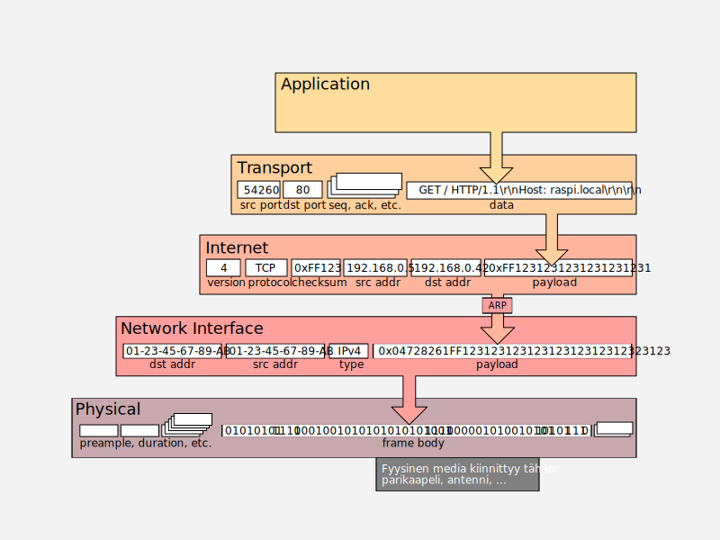

Life of a Query
Käyttäjä ja applikaatio
Kun käyttäjä kirjoittaa osoitekenttään [http://]www.raspi.local, selain päättelee halutun protokollan (HTTP) osoitekentän sisällöstä. Selain ei tiedä raspi:n IP-osoitetta, joten se kysyy tätä käyttöjärjestelmältä, joka käy katsomassa ensin hosts-tiedoston sisällön; mikäli tietoa ei löytynyt, se kysyy ensisijaiselta DNS-resolverilta vastausta.
Kun IP-osoite on tiedossa, on aika muodostaa yhteys, siirtää data, ja lopulta katkaista yhteys.
sequenceDiagram
actor user as Käyttäjä
participant client as Internet-selain
participant server as Raspi HTTP Server
participant DNS as DNS-resolveri
user->>client: http://www.raspi.local
client->>DNS: Mikä on raspi.local IP-osoite?
DNS->>client: Se on 192.168.0.42
Note right of client: TCP-kättely alkaa
Note right of client: ARP (cache tai kysely)
client->>server: SYN
server->>client: SYN+ACK
client->>server: ACK
Note right of client: Tiedonsiirto alkaa
client->>server: HTTP-pyyntö
server->>client: HTTP-vastaus
Note right of client: Muut resurssit (CSS, JS)
client->>server: HTTP-pyyntö
server->>client: HTTP-vastaus
client->>server: HTTP-pyyntö
server->>client: HTTP-vastaus
Note right of client: Yhteyden lopetus alkaa
client->>server: TCP-lopetus FIN
server->>client: TCP-lopetus ACK + FIN
client->>server: TCP-lopetus ACK
client->>user: Sivu piirretään
Mikäli HTTP-pyyntö olisi toteutettu Pythonilla, ja se käyttäisi low-level socket-kirjastoa, koodi voisi näyttää jotakuinkin tältä:
import socket
HOST = 'raspi.local'
PORT = 80
with socket.create_connection((HOST, PORT), timeout=5.0) as sock:
sock.sendall(b"GET / HTTP/1.1\r\nHost: raspi.local\r\nConnection: close\r\n\r\n")
while True:
data = sock.recv(4096)
if not data:
break
Huomaa, että applikaation ei tarvitse huolehtia kättelyistä. Nämä tapahtuvat OSI-mallin (tai TCP/IP-pinon) alemmilla kerroksilla. Asiakas käyttää HTTP-protokollaa, kuten myös serveri, eli applikaatioiden välinen liikenne tapahtuu TCP/IP-mallin Application -kerroksessa. HTTP-protokolla ei ota kantaa siihen, kulkeeko signaali perille 2 metrin LAN-kaapelia, vai satelliittireittejä, ja onko välissä nolla, yksi vai kymmeniä reitittimiä. HTTP-protokollaa käyttävälle asiakasohjelmalle riittää, että yhteys muodostuu ongelmitta, ja paluupostissa tulee vastaus. Esimerkkivastaus alla:
HTTP/1.0 200 OK
Date: Sun, 13 Aug 2023 10:02:47 GMT
Server: WSGIServer/0.2 CPython/3.11.0
Content-Type: text/html
Content-Length: 22553
<!doctype (...paljon HTML-koodia...) </html>
Vaikka yllä käytetty socket on itsessään kohtalaisen low-level -kirjasto, siinä käytetty create_connection-funktio on abstraktio sen alla olevasta socket.socket() funktiosta. Mikäli haluat tutustua create_connection-funktion piilottamaan logiikkaan, katso Githubista kyseisen CPython-funktion koodi. Socket-kirjasto on kokonaisuudessaan melko alhaisen tason luokka. Mikäli haluaa tiivistä koodia, voit käyttää huomattavasti abstraktimpaa requests-kirjastoa, joka pitää asentaa erikseen esimerkiksi komennolla pip install requests. Alla esimerkki requests-kirjastoa käyttäen:
Kyllä, siinä on kaikki mitä tarvitsee osata käyttääkseen HTTP- ja TCP/IP-protokollaa käyttöjärjestelmässä, jota Python sockets tukee!
TCP/IP kerros

Kuvio 1: TCP/IP-protokollaperhe IEEE 802.x:n (Ethernet, Wireless Ethernet, ...) päälle toteutettuna. Malli noudattaa 5-kerroksista varianttia, jossa Hardware/Physical on mukana.
Käyttöjärjestelmä, verkkokortin ajurit ja verkkokortin rauta piilottavat sisäänsä suuren osan tietoliikenteen monimutkaisuudesta. TCP/IP:n ylemmät kerrokset pysyvät muuttumattomina, oli varsinaisena siirtomedian protokollana Ethernet, Wireless Ethernet, PPP, MLPS tai muu. Vastaanottavan koneen päässä sama protokollapino suoritetaan päinvastaisessa järjestyksessä.
Tässä yksinkertaisessa esimerkissä raspi.local tietokone sijaitsee kenties samassa lähiverkosa. Entä jos ei? Tällöin tarvitaan laitteita, jotka kytkevät useita verkkoja yhteen eli reitittimiä. Lue seuraava luku tätä varten.
Wireshark
Huomaa, että voit analysoida yllä tapahtuvaa liikennettä Wireshark-ohjelman avulla. Mikäli liikenne tapahtuu kokonaan kotikoneesi sisällä, kaappaa ja analysoi loopback-nimistä network interfacea. Mikäli liikenne kohdentuu kotikoneesi ulkopuolelle, joko lähiverkkoon tai Internetiin, kaappaa ja analysoi käyttämäsi verkkosovittimen liikennettä. Jos et ole ennen käyttänyt Wiresharkia, tutustu ohjevideoihin. Niitä löytyy Youtubesta reilusti, kuten Chris Greerin Wireshark Masterclass. Peruskäyttöä varten riittää, että katsot soittolistan pari ensimmäistä videota.
Mikäli seuraat interfacea, joka ei ole loopback, on suositeltavaa:
- Sulje kaikki Internetiä käyttävät ohjelmat, joita et tarvitse.
- Luo Capture Filter, joka rajaa pakettien tallennuksen sinun use caseen, jos mahdollista. Aina se ei ole.